2023 – 2026
Navigation Redesign, Blue Shield of California
As a Lead Product Designer on the Cerulean Design System, I led the redesign of our header and footer components end-to-end from research to implementation.
Project purpose
Members struggled to find what they were looking for on the BSC website. This was reflected in a low NPS (Net Promoter Score) score for "Find info on website". The navigation redesign addressed the core issues leading to poor wayfinding.
How does this work support organizational goals?
Improving site navigation will support the digital strategic vision of simplifying healthcare interactions by helping user's find the information they need to understand their plan and benefits.
Measurable Impact
These metrics and member comments were collected by the marketing communications team through the BSC site survey.
- +2.7pts(+24%) statistically significant increse for "Find info on website" NPS score YoY since the implementation of this redesign.
- "Website is easier to navigate than your competitors (Aetna)... A much smoother experience than prior years (with different companies)" NPS: 9
- "Haven't had any issues getting a response from customer service. Very helpful. It's nice speaking to a person vs a chat bot. Website wonderful. Very simple." NPS: 9
- "I'm grateful for the coverage I have and thankful I can have this policy through Covered California. The Blue Shield of California website is easy to navigate." NPS: 10
NPS score (1 = lowest, 10 = highest) shows how well the BSC site helped members find information.
Team members
- Diana Rios, Product Manager
- M.K. Cook, Principal Visual Designer
- Grace Lau, Information Architect
- Talia Bowles, Lead Product Designer
- Vikas Lnu, Angular Developer
- Mahmud Karim, Angular Developer
- Bibin Kattakayam Chandy, AEM Developer
- Ajay Kumar Cherukupally, AEM Developer
- Rajini Challa, QA Analyst
UX Research
I conducted 100+ userzoom studies with a focus on click tests and surveys. In addition, I leveraged competitive research done by Grace Lau while redesigning the member information architecture, google analytics reports from the customer experience and analytics team and other advanced research conducted by our master usability specialist.
Keys areas of research
- Search visual design & layout
- Log in/Register
- Portal links (links to the provider, broker, employer portals that are in the upper right corner)
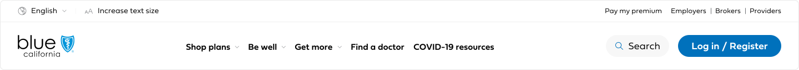
Old member navigation
Search Visual Design
I found baseline guides for how search should appear on Nielson Norman Group and other reputable sources to analyze how the visual design of the search might need to be adjusted.
What worked in the old navigation:
- Search label
- Schematic icon (an illustration with less detail speeds up recognition)
- Positioned in right-hand corner
- Use a growing search box
- Don't isolate or crowd search
What needed improvement:
- Use plenty of contrast so the icon stands out from the background and surrounding elements
Search layout
After conducting research on search preferences for health insurance websites, we learned users prefer to use the main navigation items first and then search. Here are my layout recommendations supported by these key findings:
- Logo stays on the left because it supports brand recall.
- Search stays in the upper right-hand corner, where users look for it, with increased color contrast.
- Menu items move directly before search to support member preferences.
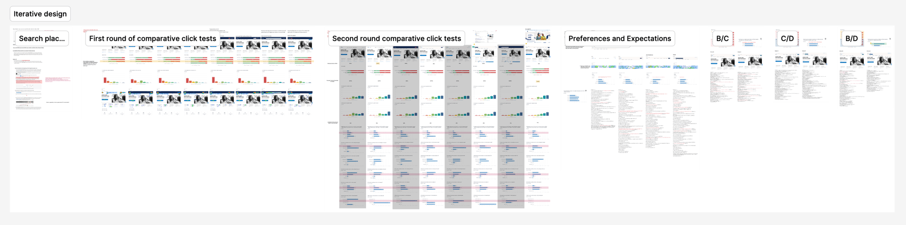
Search research share out
"I like the search option on the right side. We read left to right. After reading the headings, if I don't see what I want, the search bar is next in my line of vision." Participant survey response
Old member navigation
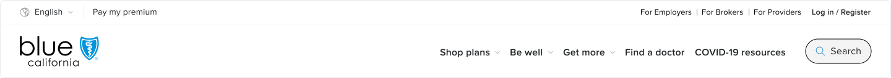
Layout recommendation
Log in/Register
Why move "Log in/Register" and make it a text link?
- Creates more space in the main navigation area.
- Grouping the portal links with "Log in/Register" makes sense contextually.
- The text link fits better in the utility navigation and validated through research that it does not affect users' ability to log in to their account.
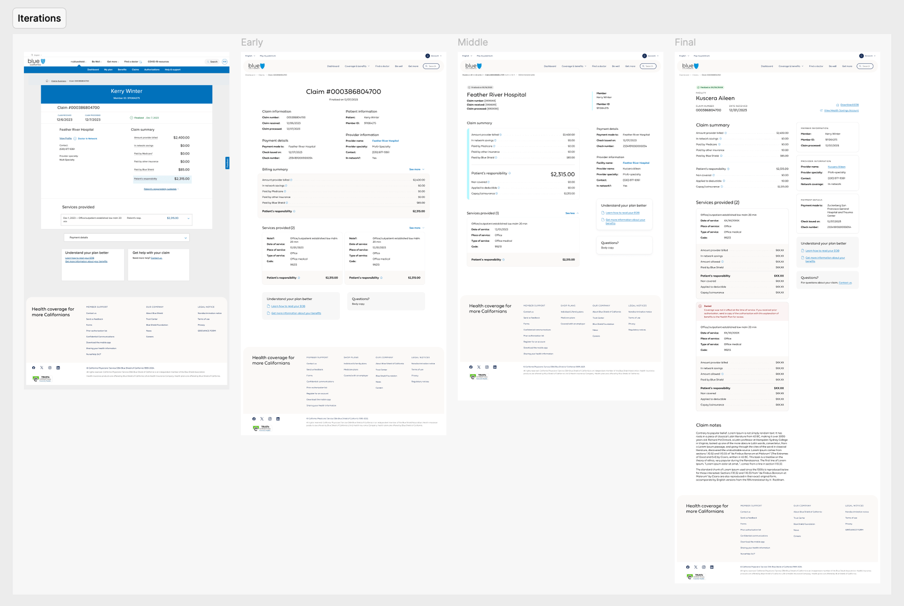
Log in button/text link research shareout
Old member navigation
Layout recommendation
Portal links
19% more participants were able to find the portal links by grouping them with "Log in/Register", adding "For...", and increasing the color contrast of the links.
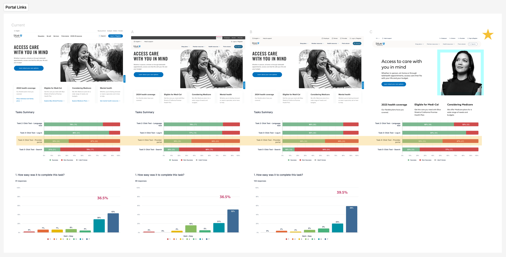
Portal link research share out
Old member navigation
Layout recommendation
Layout Recommendations Overview
- Increase search visual contrast to align with search best practices.
- Move menu directly before search to support member search preferences.
- Group "Log in/Register" with portal links and add "For..." before portal links to improve visibility.
- Remove "Increase text size" to reduce clutter. This can be done in the browser.
- Move "Pay my premium" to the left side of the utility nav to maintain visual balance.
- Make navigation "sticky" on scroll so menu and search are readily available to users no matter where they are on the page.
Old member navigation
Layout recommendation
Visual polish
I collaborated with our Principal Visual Designer to apply the brand look & feel.
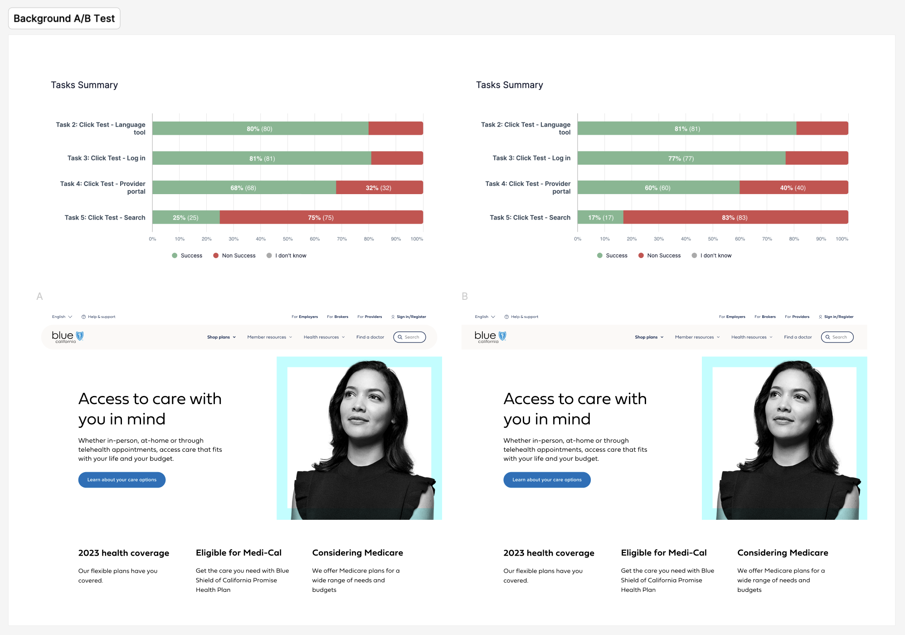
Visual polish research share out
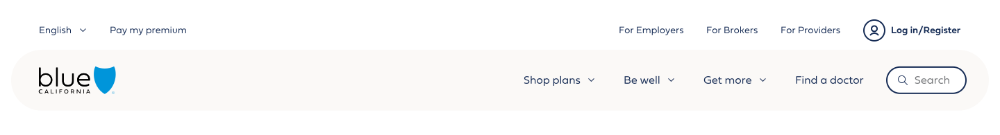
Visual polish
Design system component
Here you can see the abstracted component and how it can accommodate different content requirements for our main site and microsites. Properties like the number of main navigation items, utility links, market text next to the logo, search, and the upper blue microsite bar can be turned on and off.
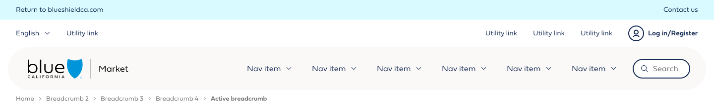
Large screens
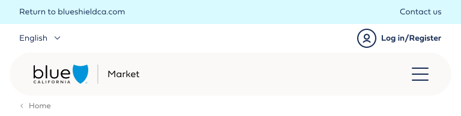
Small screens
Member page examples

Member unauthenticated homepage (AEM)
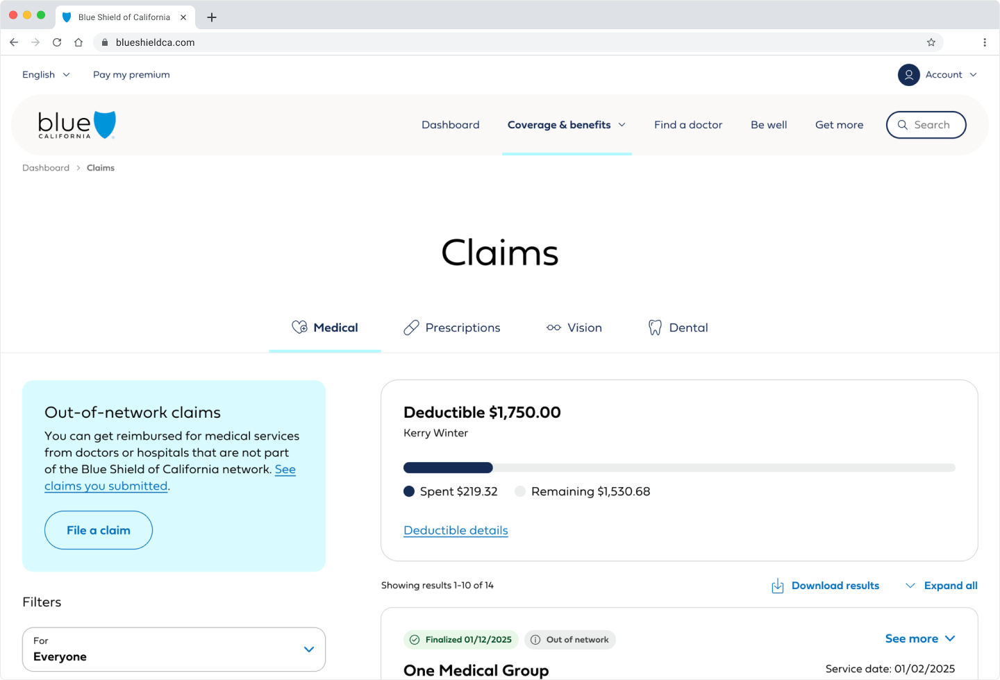
Member authenticated claims (Angular)
Stakeholder Alignment
I met with many B2C stakeholders and product owners to align on design decisions and the specific application of the B2C navigation component on their product area. Whenever there was pushback, I led with curiosity to understand their concerns and ensured them of the data-driven design approach. I made adjustments to the design when called for in specific use cases.
Component development & adoption
I owned the UAT process and was the point of contact for both the Angular and AEM developers. This process became an opportunity for growth and cross-functional collaboration especially when it came to implementing elements of polish. The first release of the navigation met basic visual requirements, but lacked smooth animations and effective background blurs. This required me and the developers to iterate and collaborate to achieve the full design intention in the released component.
B2C Navigation Variations
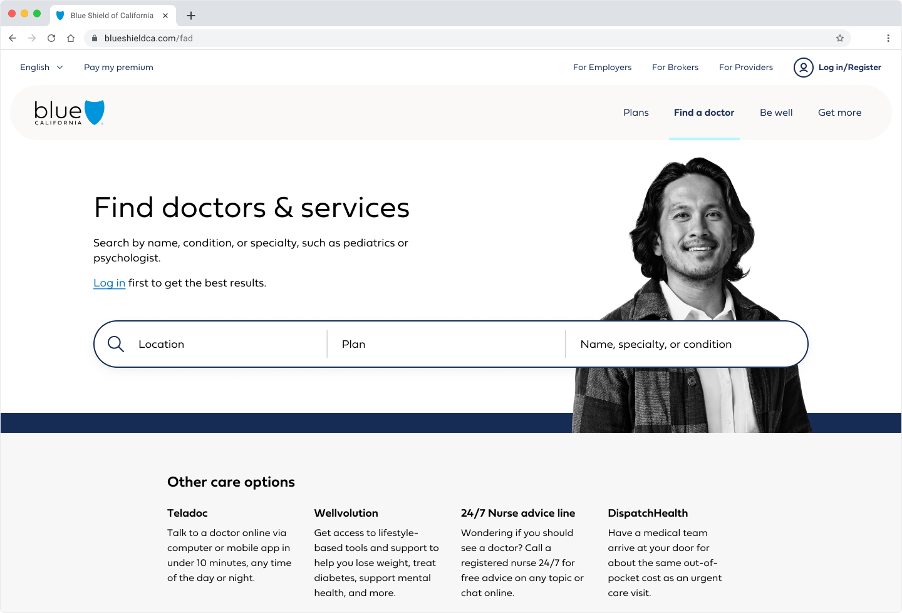
Find a doctor
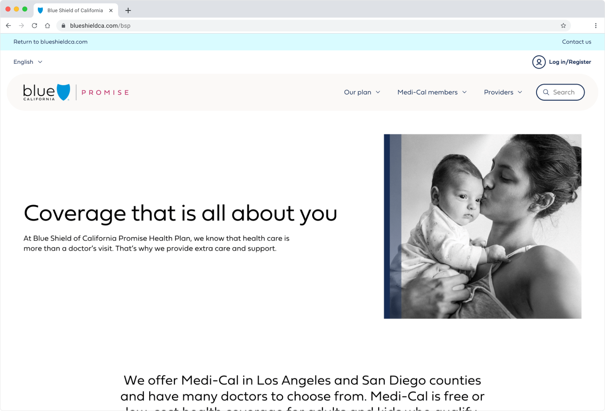
Promise (Medi-Cal) microsite
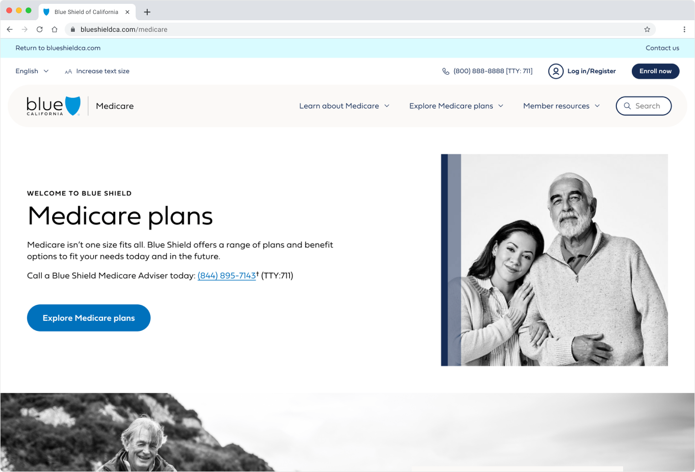
Medicare microsite
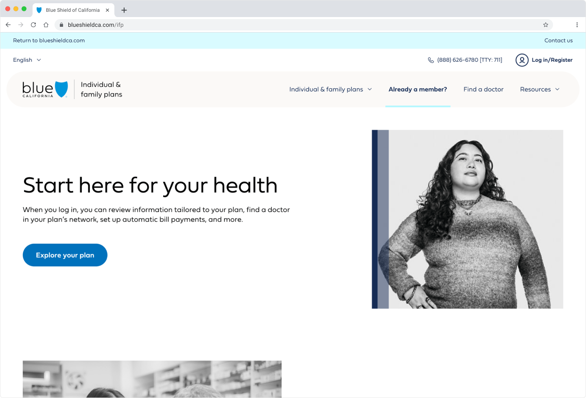
Individual & family plans microsite
Stakeholder Demo
The QA Analyst, Lead Developer, and I conducted stakeholder demos prior to release for digital and non-digital stakeholders to share what changes were being implemented. This helped to demonstrate the impact of the design system and also emphasized that we were not making any functionality changes.